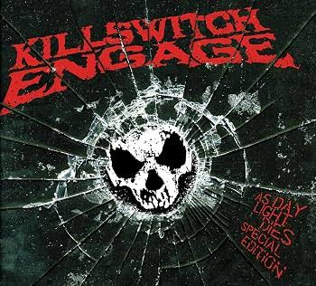
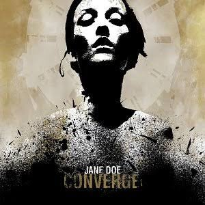

2007As Daylight Dies
Killswitch Engage
Metalcore Timeline
← Voltar para a página principalNessa década o gênero ainda tinha uma pegada mais crua e independente, misturando breakdowns pesados com a energia do hardcore. Foi a fase em que o metalcore ganhou identidade própria antes de se popularizar.

2007Killswitch Engage
Underoath

2004Converge